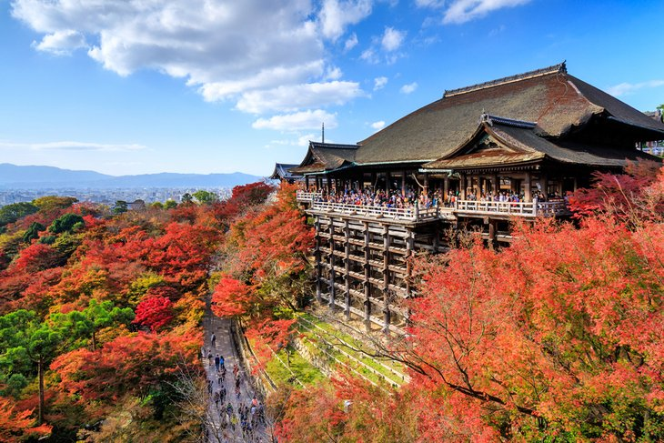

Kiyomizu-dera Temple
In the east part of Kyoto, the Kiyomizu-dera Temple, an important UNESCO World Heritage Site, lies in a
picturesque location on Otowa Mountain overlooking the city. Visitors can enjoy a delightful stroll to
the temple along quaint Tea-pot Lane with its small shops and craft stores.
This beautiful temple was founded in AD 790 and dedicated to the 11-headed Kannon, the Buddhist Goddess
of Mercy whose statue can be seen here. The existing buildings were erected after 1633 in the period of
the third Tokugawa Shogun, Iemitsu, and stand mainly on a rocky outcrop high above the Otowa Waterfall.
Highlights include the large terrace of the Main Hall, built on 30-meter-tall pillars with five rows of
cross-beams and used as a stage for temple dances and ceremonies. The terrace affords spectacular views
over the city and the surrounding wooded hills, especially when the leaves change color in fall.
Personalized English language guided tours are available.
Address: 1 Chome-294 Kiyomizu, Higashiyama Ward, Kyoto, 605-0862
Official Site: www.kiyomizudera.or.jp/en/
Gallery